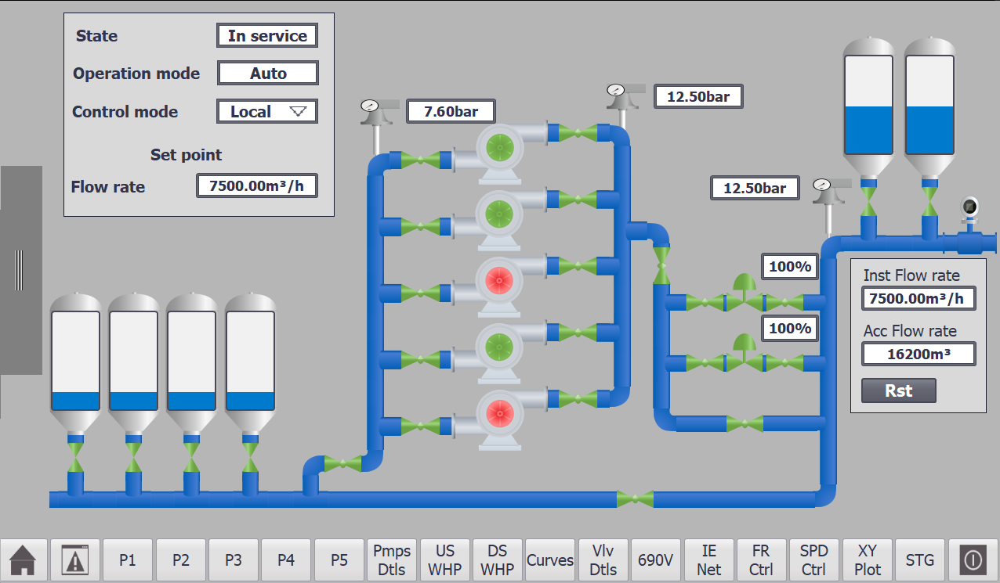
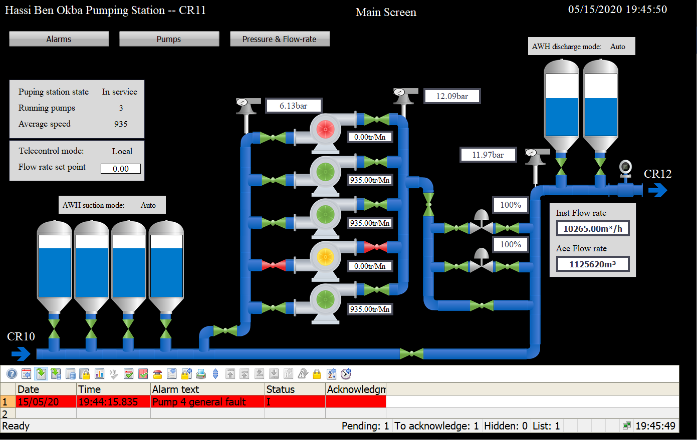

Conveyor Systems & Material Sorting
Material handling, object detection, and sorting sequences.
PLC Programming · Industrial Control Systems · HMI/SCADA · Simulation & Technical Training
My work in industrial automation combines PLC programming, HMI/SCADA development, industrial communication, and simulation-based engineering. I have developed automation solutions ranging from pumping-station control and supervision to hardware-based smart parking and virtual industrial processes.
My experience includes Siemens and Allen-Bradley programming environments, Factory I/O simulation, and practical PLC tutoring, connecting control-system engineering with hands-on implementation and technical education.
Completed during an Automation & SCADA internship at SEOR (Oran Water Board), two academic engineering projects addressed PLC-based automation and SCADA supervision of the Hassi Ben Okba pumping station, a 4+1 pump booster facility within the Mostaganem–Arzew–Oran water supply system. The work covered control-system development, industrial communication, process protection, operator interfaces, and simulation-based verification. The developed systems were not operationally commissioned at the pumping station.
Water Pumping Station Automation
Using Siemens TIA Portal, I developed modular PLC control logic for pump sequencing, operating-hour rotation, valve coordination, and process interlocks. The system also addressed flow and pressure regulation, water-hammer protection, compressor management, and backup-power sequencing.
The control architecture incorporated master-to-slave PLC communication and distributed instrumentation. WinCC operator interfaces provided equipment status and process monitoring.

Analysis and Design of a SCADA System
Using WinCC Professional, I developed a supervisory application for centralized monitoring of pumping-station equipment and process variables. The system incorporated process tags, operator screens, alarm management, real-time trends, and historical data logging.
Simulation scenarios were used to evaluate equipment-state visualization, process monitoring, and alarm behavior, including pump-fault acknowledgment.

I have developed and tested PLC control programs across most Factory I/O simulation scenes, including material handling, sorting, assembly, warehousing, and multi-station production. My work involves Siemens TIA Portal/STEP 7 and Allen-Bradley Studio 5000/RSLogix, using Ladder Diagram, Function Block Diagram, and Structured Text.
These demonstrations emphasize sequential control, sensor–actuator coordination, interlocks, fault testing, and systematic troubleshooting.
Material handling, object detection, and sorting sequences.
Actuator coordination and multi-step automation.
Storage, retrieval, and material-transfer control.
Coordinated sequences, interlocks, and troubleshooting.
I developed the PLC control program for a smart parking system accommodating approximately 30 vehicles, using an AutomationDirect CLICK PLUS PLC. Each parking space was equipped with a SECO-LARM ENFORCER E-931-S35RRQ photoelectric sensor for vehicle detection and a 24 V DC HZYS LTA-505W three-color LED tower light to indicate occupancy (red) or availability (green).
My responsibilities included PLC programming, sensor input processing, visual indicator control, and assisting with the physical implementation of the system.
I provide online tutoring in PLC programming and Factory I/O, using practical automation exercises to explain control logic, sensor–actuator interaction, sequential operation, and troubleshooting. The sessions connect PLC programming concepts with simulated industrial processes, supporting hands-on learning and problem-solving.
LAD, FBD, ST, sequential control, modular logic, and interlocks.
HMI/SCADA development, process visualization, alarms, trends, and data logging.
PLC architectures, industrial Ethernet, PROFIBUS, and instrumentation.
PLCSIM, Factory I/O, fault testing, debugging, and verification.
Selected environments and tools: Siemens TIA Portal / STEP 7, WinCC Professional, Allen-Bradley Studio 5000 / RSLogix, Factory I/O, and AutomationDirect CLICK PLUS.